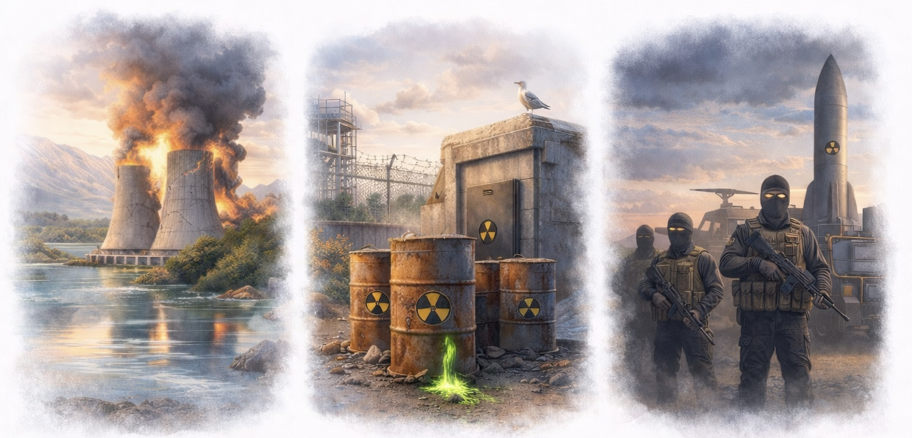

Dans les pays dits « démocratiques », où l’État de droit est censé prévaloir, les choix énergétiques ne sont pas simplement imposés, mais doivent être acceptés par les citoyens que l’État est censé servir.
Dans le cas de l’énergie nucléaire, l’histoire a montré que cette acceptation est étroitement liée à des préoccupations telles que les accidents nucléaires, les déchets radioactifs (y compris ceux issus du démantèlement), ainsi que le risque de prolifération des armes nucléaires.
L’objectif de cette section n’est pas de minimiser ces préoccupations, mais de les examiner attentivement et objectivement. Une analyse plus concrète et technique sera développée dans la fiche technique détaillée de chaque réacteur.